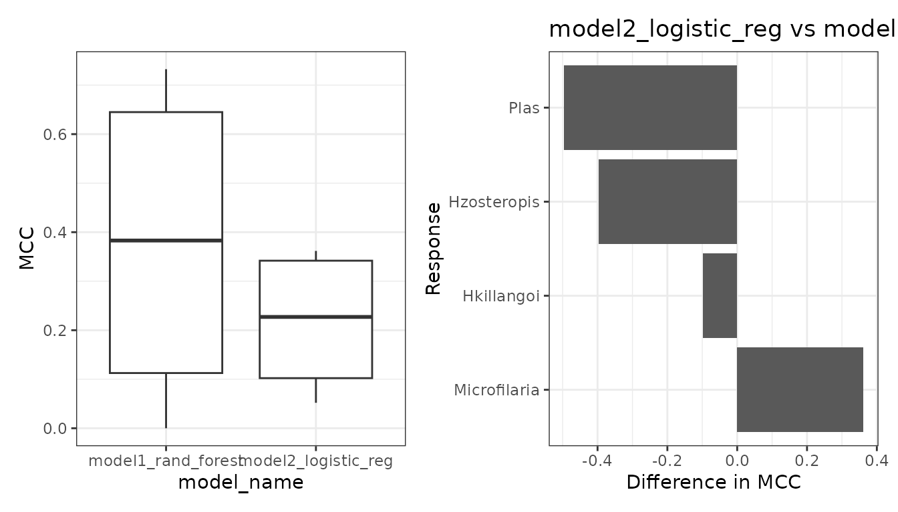
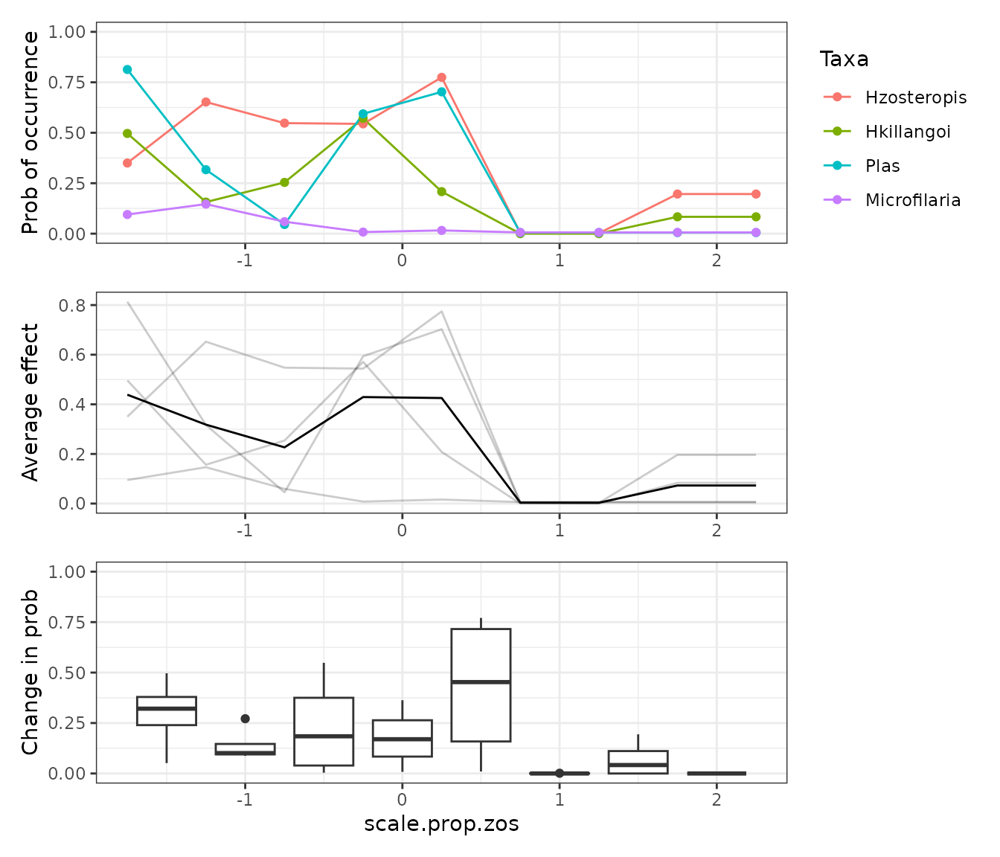
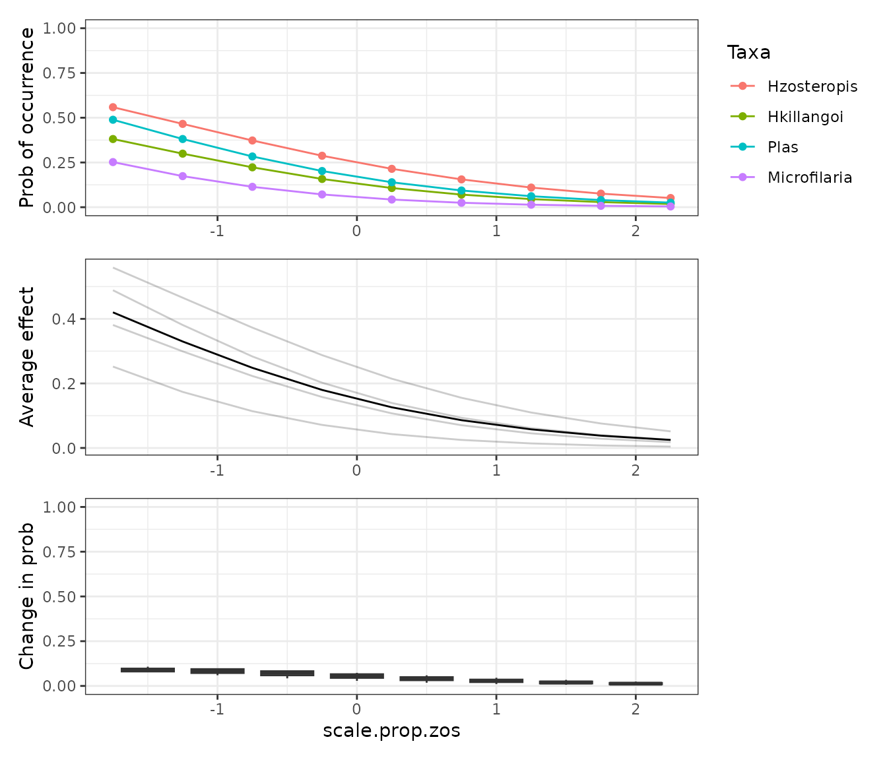
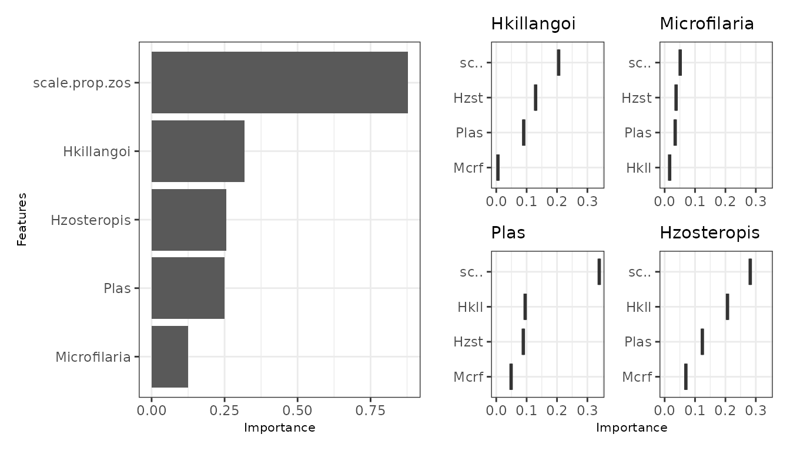
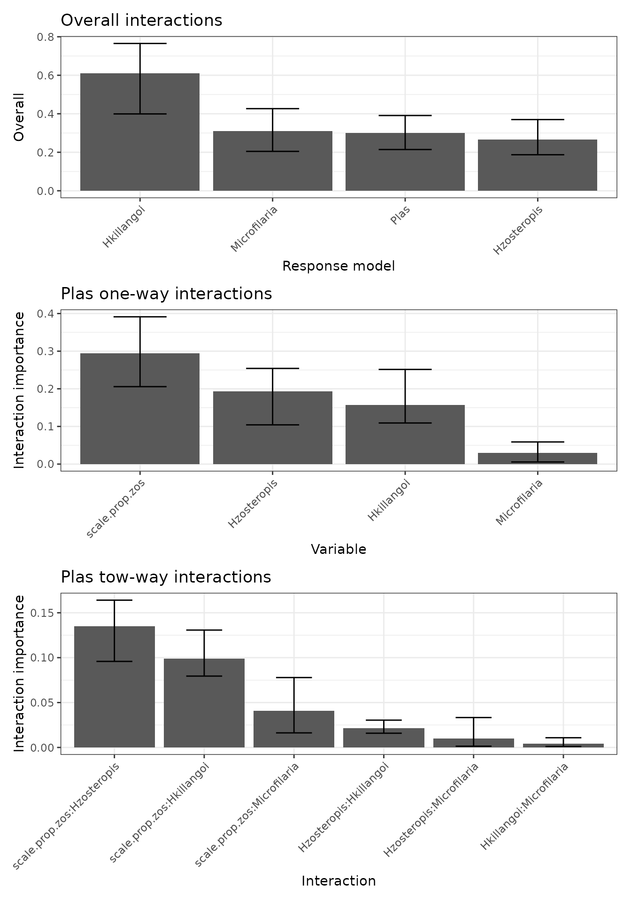

mrIML is a package for interpretable machine learning in
R, specifically designed for multivariate (or multi-response) data. It
provides tools for building and interpreting multi-response models using
the tidymodels
syntax; making it very useful for applications in community ecology and
ecological genomics.
library(mrIML)
library(tidymodels)
library(flashlight)
library(ggplot2)
library(patchwork)
set.seed(7007)Here we demonstrate a basic mrIML workflow using the
Bird.parasites data set from the MRFcov
package. This data set contains binary occurrences of four blood
parasite species–Hzosteropis, Hkillangoi, Plas, and
Microfilaria–in New Caledonian birds and a scaled continuous
variable representing host relative abundance:
scale.prop.zos.
data <- MRFcov::Bird.parasites
head(data)
#> # A tibble: 6 × 5
#> Hzosteropis Hkillangoi Plas Microfilaria scale.prop.zos
#> <dbl> <dbl> <dbl> <dbl> <dbl>
#> 1 0 0 0 0 -1.09
#> 2 0 0 0 0 -1.09
#> 3 0 0 0 0 -1.09
#> 4 0 0 0 0 -1.09
#> 5 0 0 0 0 -1.09
#> 6 0 0 0 0 -1.09To fit a multi-response models, we must first separate the data into the responses, the variables we wish to predict, and the covariates, the variables used only as predictors.
# Responses
Y <- select(data, "Hzosteropis", "Hkillangoi", "Plas", "Microfilaria")
# Covariates
X <- select(data, "scale.prop.zos")Many of the functions in the mrIML wrokflow that follows
can be greatly sped up by using parallel processing. To do this, we just
need to set up a cluster using the future package.
future::plan(multisession, workers = 2)Fitting a mrIML model
The first step in the mrIML workflow is to define some
models that we would like to compare. Thanks to tidymodels,
we can define a wide range of models using a unified syntax. To
demonstrate, we are going to set up two models to compare: a random
forest model (RF) and a logistic regression (lm).
model_rf <- rand_forest(
trees = 100, # 100 trees are set for brevity. Aim to start with 1000.
mode = "classification",
mtry = tune(),
min_n = tune()
) %>%
set_engine("randomForest")
model_lm <- logistic_reg() %>%
set_engine("glm")The models can then be fit as multi-response models using
mrIMLpredicts(), which is the work horse of the
mrIML package. mrIMLpredicts() fits the
supplied tidymodel to each response variables. The X1
argument can be used to supply any response variables that we would like
to also use as predictors; which results in a co-ocurance model (in this
case we use all the response variables).
mrIML_rf <- mrIMLpredicts(
X = X,
Y = Y,
X1 = Y,
Model = model_rf,
prop = 0.7,
k = 5,
racing = TRUE
)
mrIML_lm <- mrIMLpredicts(
X = X,
Y = Y,
X1 = Y,
Model = model_lm ,
balance_data = 'no',
prop = 0.6,
k = 5,
racing = FALSE
)The resulting fitted mrIML model is a list object
containing the original tidy model, the data, and the fitted response
models. The remainder of the functions in the mrIML package
are aimed at interrogating, explaining, and comparing these fitted
mrIML models.
Model performance and comparison
mrIMLperformance() is another core function in
mrIML used to extract performance metrics for each of the
fitted response models inside the multi-response mrIML
model.
perf_rf <- mrIML_rf %>%
mrIMLperformance()
perf_rf$model_performance
#> # A tibble: 4 × 8
#> response model_name roc_AUC mcc sensitivity ppv specificity prevalence
#> <chr> <chr> <dbl> <dbl> <dbl> <dbl> <dbl> <dbl>
#> 1 Hzosteropis rand_fore… 0.951 0.714 0.941 0.923 0.758 0.265
#> 2 Hkillangoi rand_fore… 0.790 0.218 0.918 0.926 0.308 0.116
#> 3 Plas rand_fore… 0.902 0.438 0.955 0.875 0.4 0.196
#> 4 Microfilaria rand_fore… 0.905 0 1 0.896 0 0.0980
perf_lm <- mrIML_lm %>%
mrIMLperformance()
perf_rf$model_performance
#> # A tibble: 4 × 8
#> response model_name roc_AUC mcc sensitivity ppv specificity prevalence
#> <chr> <chr> <dbl> <dbl> <dbl> <dbl> <dbl> <dbl>
#> 1 Hzosteropis rand_fore… 0.951 0.714 0.941 0.923 0.758 0.265
#> 2 Hkillangoi rand_fore… 0.790 0.218 0.918 0.926 0.308 0.116
#> 3 Plas rand_fore… 0.902 0.438 0.955 0.875 0.4 0.196
#> 4 Microfilaria rand_fore… 0.905 0 1 0.896 0 0.0980These performance metrics can be compared between different
mrIML model using mrPerformancePlot().
perf_comp <- mrPerformancePlot(perf_rf, perf_lm)
perf_comp$performance_plot + perf_comp$performance_diff_plot
Interogating models
To explore the effect of predictors on the different response models,
mrIML works closely with the flashlight
package, particularly their implementation of
flashlight::light_profile() to generate partial dependency
curves (PDs) for model agnostic comparisons. The
mrFlashlight() function can be used to convert a
mrIML model into a flashlight object in order
to apply most of the flashlight functions.
fl_rf <- mrIML_rf %>%
mrFlashlight()
fl_rf$Microfilaria %>%
light_profile(data = data, v = "scale.prop.zos") %>%
plot() +
ggtitle("Effect of scale.prop.zos on Microfilaria") +
theme_bw()
mrCovar() is a wrapper around
mrFlashlight() and flashlight::light_profile()
to quickly compare the effect of a predictive covariate across the many
response models.
PD_scale.prop.zos_rf <- mrIML_rf %>%
mrCovar(var = "scale.prop.zos", sdthresh = 0)
PD_scale.prop.zos_rf[[1]] /
PD_scale.prop.zos_rf[[2]] /
PD_scale.prop.zos_rf[[3]] +
plot_layout(axis = "collect")
Since PDs are model agnostic, we can use them for any kind of predictive model. For example we can compare the RF model results above directly with the LM bellow. We could even compare a Neural Net if we had enough data to fit it!
PD_scale.prop.zos_lm <- mrIML_lm %>%
mrCovar(var = "scale.prop.zos", sdthresh = 0)
PD_scale.prop.zos_lm[[1]] /
PD_scale.prop.zos_lm[[2]] /
PD_scale.prop.zos_lm[[3]] +
plot_layout(axis = "collect")
The variability in the response probability across a PD curve can be
used to rank variable importance in each response model. On this basis,
mrVip() compares variable importance across the response
models inside a mrIML model.

If there are many response models and/or covariates, the
threshold, global_top_var, and
local_top_var arguments can be used to filter the variable
importance results that are plotted by mrVip. The
taxa argument can also be used to plot a desired response
model that may not fit the filtering criteria. See ?mrVip()
for the specifics of these arguments.
Bootstrapping for uncertainty
To quantify uncertainty in a mrIML model, the function
mrBootstrap() bootstraps the PDs. The output can then be
passed to mrPdPlotBootstrap() to visualize the PDs.
mrIML_boot_rf <- mrIML_rf %>%
mrBootstrap()
#> | | | 0% | |== | 2% | |==== | 5% | |===== | 8% | |======= | 10% | |========= | 12% | |========== | 15% | |============ | 18% | |============== | 20% | |================ | 22% | |================== | 25% | |=================== | 28% | |===================== | 30% | |======================= | 32% | |======================== | 35% | |========================== | 38% | |============================ | 40% | |============================== | 42% | |================================ | 45% | |================================= | 48% | |=================================== | 50% | |===================================== | 52% | |====================================== | 55% | |======================================== | 58% | |========================================== | 60% | |============================================ | 62% | |============================================== | 65% | |=============================================== | 68% | |================================================= | 70% | |=================================================== | 72% | |==================================================== | 75% | |====================================================== | 78% | |======================================================== | 80% | |========================================================== | 82% | |============================================================ | 85% | |============================================================= | 88% | |=============================================================== | 90% | |================================================================= | 92% | |================================================================== | 95% | |==================================================================== | 98% | |======================================================================| 100%
mrPdPlotBootstrap(
mrIML_rf,
mrBootstrap_obj = mrIML_boot_rf,
target = "Plas",
global_top_var = 4
)[[2]]
After bootstrapping the PDs, the bootstrap information can be
supplied to mrVip() to include uncertainty bounds in the
plots.
vip_boot_rf <- mrVip(
mrIMLobj = mrIML_rf,
mrBootstrap_obj = mrIML_boot_rf
)
vip_boot_rf[[3]]Checking for interactions
Another helpful investigative tool is mrInteraction().
This function quickly identifies which response models have strong
evidence of interactions between predictors, which predictors have the
most interactive effects, and which interactions are the strongest.
interactions_rf <- mrIML_rf %>%
mrInteractions(feature = "Plas", num_bootstrap = 10)
interactions_rf[[1]] /
interactions_rf[[2]] /
interactions_rf[[3]]